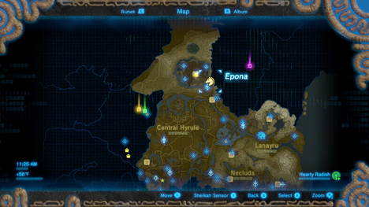
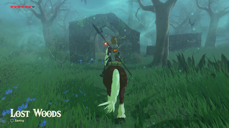
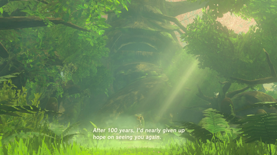

旷野之息是一个非常开放的游戏，系列的第一个。 因此，下面的指南只是您可以体验游戏的许多可能方式之一。 我们建议您花时间探索世界各地的主要目标。
FINDING THE LOST WOODS
与其他主要任务不同，在你确实找到大师之剑之前，这个任务从来没有实际给予你。 每个种族的许多领导人都会给你一些暗示的位置 - 但事实上，大师剑藏在位于海拉尔城堡北部地区海拉尔大森林深处的失落的森林里。
{kind=link}
从林地塔(Woodland Tower)，您可以看到大森林几乎被水封闭。 但是，试图爬上或滑入失落的森林，你会被神秘的笑声所带走。
{kind=link}
要进入失落的森林，你必须走在塔的东北方向，沿着道路直到该地区弥漫雾气而且到达一个大的毁坏的拱门。
对于这些下一节，在任何情况下偏离路径将导致您被送回到最后一个检查点 - 在这种情况下 - 大拱门。 请注意，这里有一个点燃的火炬，开始你漫长的路。

从第一火炬朝北，再次向北，然后朝西，再次西，然后南，最后朝西看，在远处的两只火炬之前，一个大的食人魔之树，里面有一个宝箱。
从两个火炬，事情变得更加困难 - 没有更多的火炬来引导你，如果你走错了路，你将被快速的笼罩在雾里，并带回火炬。如果你反应迅速，你可以逃脱雾 - 但它移动非常快。
为了找到你的方式，你可以使用火炬。用点燃的火炬 - 注意灰烬在风中闪烁的方式。这是你的指导，穿过 - 跟随着余烬，然后停下来看看他们是否改变方向，并继续走风吹过去方向找入口。
如果你宁愿一直冲，确保你的地图是明确的，并开始在两棵树之间的西南。继续这样做，一定要检查较大的地图，直到几乎垂直于地图上的一片土地，看起来像在森林中间的一个山谷。当你靠近这个地方的时候，转向西北方向，并沿着这个方向跑，直到看到山谷的入口。一旦你到达高墙之间的山谷，你会是安全的，向前走，你将进入Korok森林。
OBTAINING THE MASTER SWORD
当你到达树林的中心，你会终于找到主剑，但试图拉它将导致突然的视力，大德黑树将唤醒与你说话。
{kind=link}
自从100年前把剑带到这里以来，发生了很多事情，只有那些被剑选中的人并且有足够的能力才能拔出“剑”。 这包括你 - 即使这一次。 根据你在游戏中的位置，你可能还不能拔出剑。 如果你试图拉它，你会发现它慢慢消耗你的心。 如果您没有足够的心，您将无法将其从基座上拉出。 你第一次尝试时，大德黑树将在你的最后的心耗尽之前停止 - 但是之后，你会有生命危险。
{kind=link}
{kind=link}
事实上，拉大师剑将需要共有13个心脏容器。 随着三颗心开始游戏，这意味着你还需要另外10个心脏容器。 心脏容器可以通过交易4个精神球体或完成一个神兽地牢获得。 考虑到这一点，根据你已经完成了多少个地牢，它将需要不同数量的灵魂球。 这意味着如果你没有做任何地下城，你将需要多达40个精灵球，如果你完成了所有的地牢，只需要24点。
WIELDING THE MASTER SWORD
即使这剑能驱散黑暗，也必须遵守某些规则。 你会发现你可以在任何地方使用它，但攻击常规的怪物和敌人仍然会磨损刀片。 在这一点上，它似乎就像刀片破裂一样，直到几分钟后再生才能使用。
只是刀刃可以无限期地使用，而不用担心破碎就在Ganon或他的一个化身和感染的监护人面前 - 所以当你选择使用刀刃时要注意。 当这些实体存在时，刀片会发出蓝光，并将其造成的伤害提高一倍，从30到60！